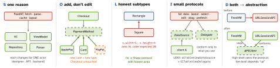

architecture · folio
In one line: Single responsibility · Open/closed · Liskov substitution · Interface segregation · Dependency inversion — Robert C. Martin’s rules for code whose parts can change independently. Each below: the exact definition, one iOS example, and which pattern serves it.
Download PDF Print view LaTeX source


Definition · iOS example
- SRP — “A module should have one, and only one, reason to
change”; Martin’s 2017 restatement: “…responsible to one, and only
one, actor”. Not “one method”: a
Moneytype withadd/formatis fine. Violation: the Massive View Controller; fix: VC · VM · Repository · Parser. - OCP — “Software entities should be open for extension, but
closed for modification” (Meyer 1988). Add behaviour by adding a type behind a protocol, not by editing a
switch. Example: a newPaymentMethod; SwiftUIViewModifier. It targets the volatile axes only; bug fixes still edit code. - LSP — “Subtypes must be substitutable for their base
types” — callers of the base must not notice (Martin, after Liskov 1987). A subtype may not strengthen preconditions, weaken
postconditions, break invariants, or throw/
fatalError/no-op where the base works. Swift smell: a read-only subclass whose setter crashes. Fine:UIButtonused anywhere aUIViewis. - ISP — “Clients should not be forced to depend on
methods they do not use.” It is judged from the caller’s side: split fat protocols into role protocols. iOS:
UITableViewDataSourcevsUITableViewDelegate; compose withA & B;Codable = Encodable & Decodable. - DIP — (a) “High-level modules should not depend on low-level
modules. Both should depend on abstractions.” (b) “Abstractions
should not depend on details. Details should depend on abstractions.” The inversion: the protocol belongs to the high-level (app/domain) side, and the low-level
URLSessionclient conforms to it. Achieved by DI; tested with aMockAPIClient.
Example — Strategy = OCP + DIP
protocol PaymentMethod { // the abstraction
func pay(_ amount: Decimal) throws }
struct ApplePay: PaymentMethod { func pay(_ a: Decimal) {} }
struct Card: PaymentMethod { func pay(_ a: Decimal) {} }
final class Checkout { // high-level policy
private let method: PaymentMethod // DIP: protocol, not Card
init(method: PaymentMethod) { self.method = method } // DI
func buy(_ total: Decimal) throws {
try method.pay(total) } // no switch on the type
}
// OCP: a new case = a NEW type; Checkout is never edited
struct PayPal: PaymentMethod { func pay(_ a: Decimal) {} }
let checkout = Checkout(method: PayPal()) // swap at runtimeWhich principle does a pattern serve?
| Pattern | Serves | Why |
|---|---|---|
| Strategy | OCP + DIP | new algorithm = new type; client holds the protocol |
| Decorator | OCP | extend by wrapping, no 2N subclasses |
| Adapter | DIP / ISP | client keeps its target protocol |
| Facade | ISP / SRP | one narrow surface over a subsystem |
| Composite | LSP | leaf and group used uniformly |
| Factory | DIP | one place touches the concrete type |
| Repository | DIP + SRP | domain depends on a data protocol |
| MVVM / MVP | SRP + DIP | logic out of the UIKit view |
Traps
- “Strategy serves ISP” — no, that describes a Facade. Strategy serves Open/Closed + Dependency Inversion.
- ISP is about clients: “clients should not be forced to depend on methods they do not use” — not “methods describe behaviour”.
- DIP says both high- and low-level modules depend on the abstraction — not just “depend on abstractions”. Name who owns the protocol (the high-level side).
- SRP ≠ “one method”; OCP ≠ “never modify”.
- DI ≠ DIP: DI is a technique (pass deps in); DIP the principle. Injecting a concrete class is DI without DIP.
- Every pattern adds indirection — a protocol with one conformer “for the future” is over-engineering (rule of three, YAGNI).
Remember
Single reason · Open to add · Liskov no surprises · ISP clients pick · DIP both point at the protocol. Martin named the rules (∼2000); Michael Feathers ordered them into “SOLID” — the order is a mnemonic, not a ranking.